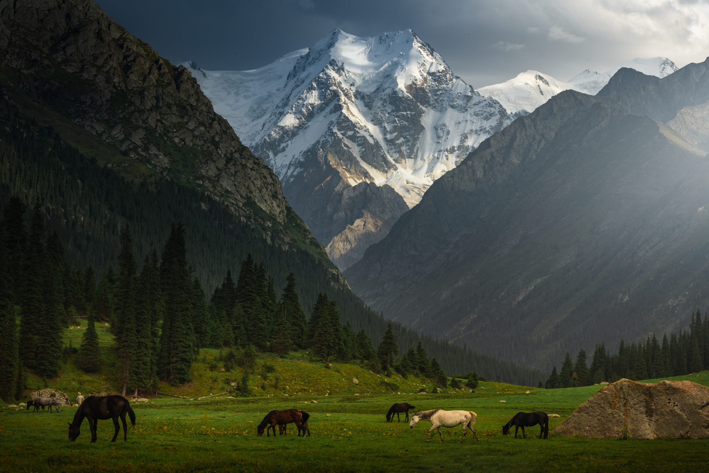

Most of these mountains in Kyrgyzstan will mean little to anyone except experienced mountaineers, but this is a list of some of the more famous mountains of Kyrgyzstan: Adygene: In Ala-Archa National Park, rising to 4,393 m (14,412 feet). The slopes are better for trekking than mountaineering. Chapaev: 6,371 m (20,902 feet), in the Central Tian Shan. Corona Peak: 4,860 m (15,945 feet), part of the Ak-Sai Range in Ala-Archa National Park.
